SUES-200
- 200 locations, altitudes 150–300 m
- Train: 120 locations, 24,000 drone images
- Test: 16,000 queries, 200-tile gallery
- Direct download
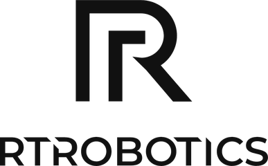
NeurIPS 2026Main TrackSydney
1University of Science, Ho Chi Minh City · 2Vietnam National University, Ho Chi Minh City · 3University of Warwick · 4CompactAI · 5Realtime Robotics, Ho Chi Minh City · *Equal contribution · †Work done during an internship at Realtime Robotics
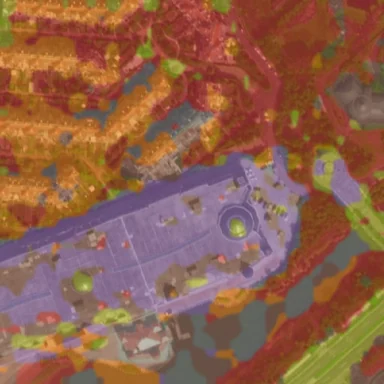
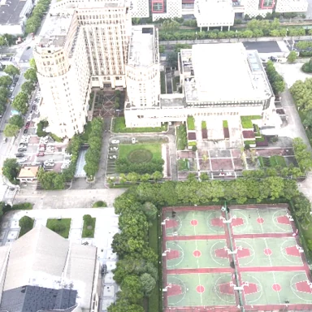

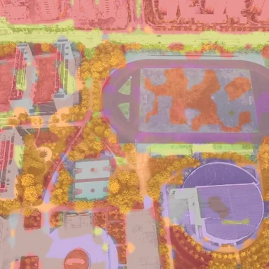
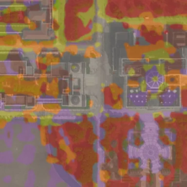
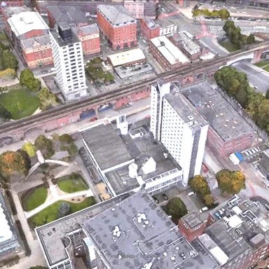
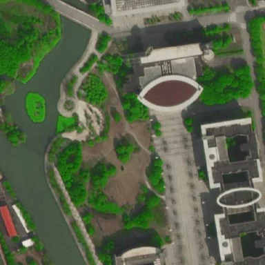
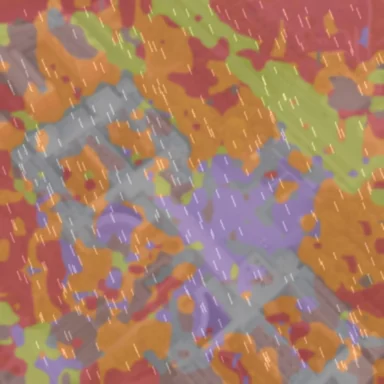
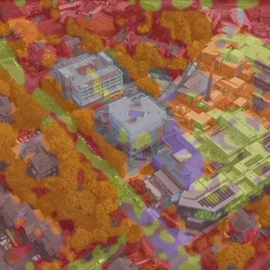
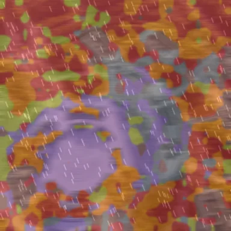
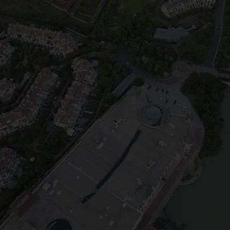

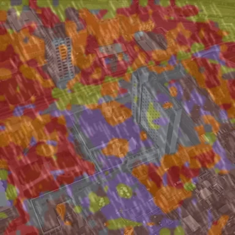
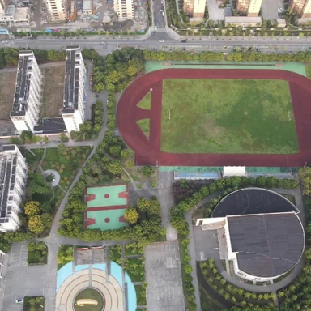
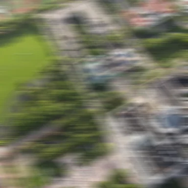
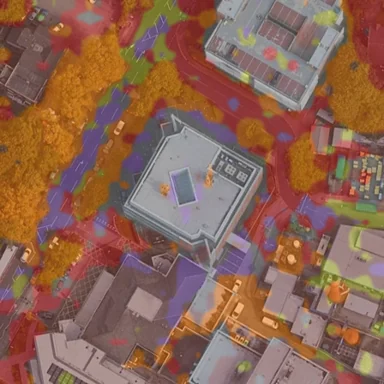
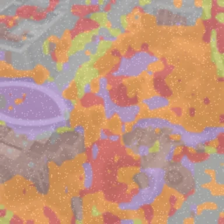
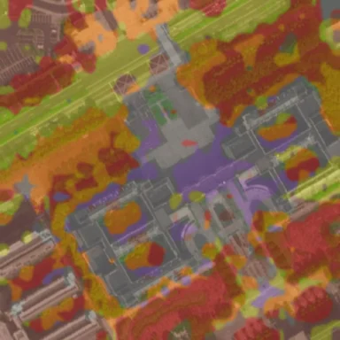
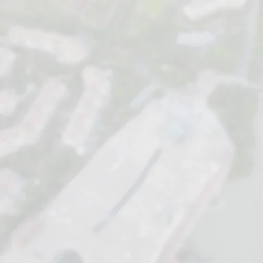
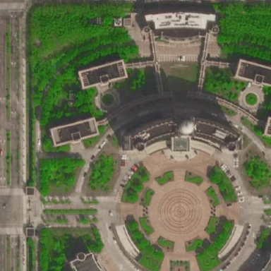
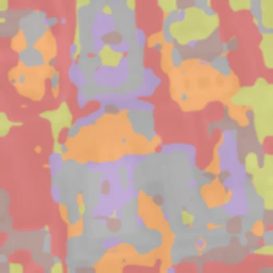
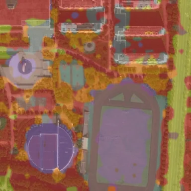
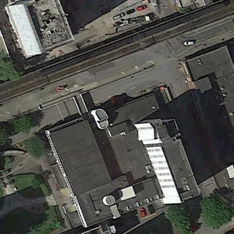
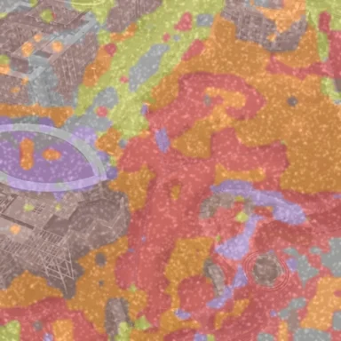
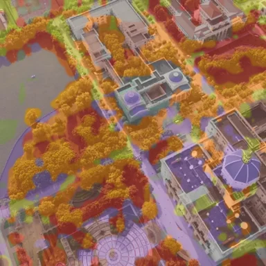
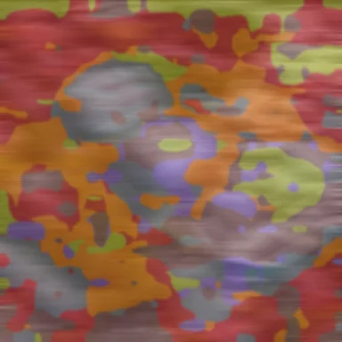
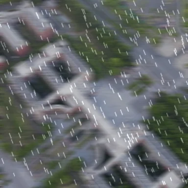
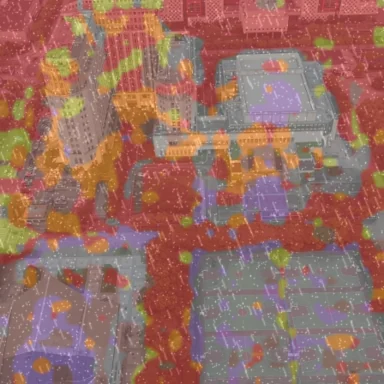
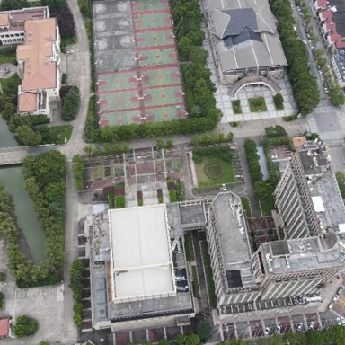
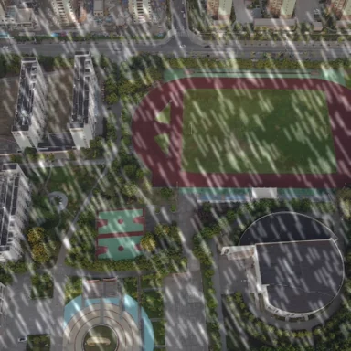
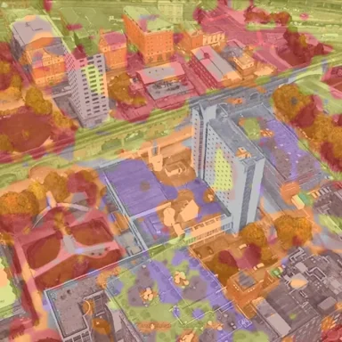
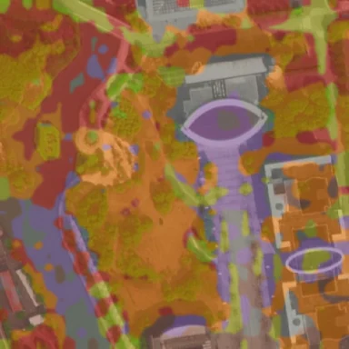
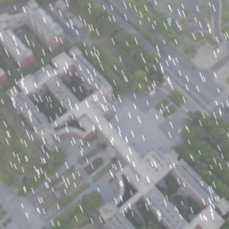
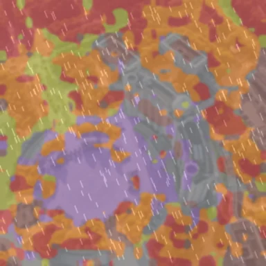
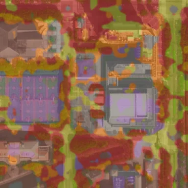
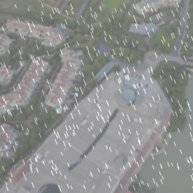
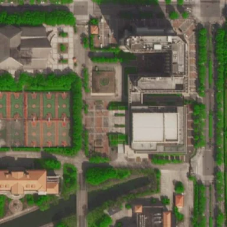
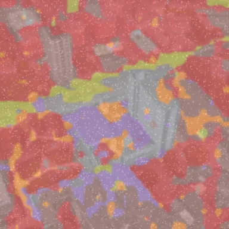
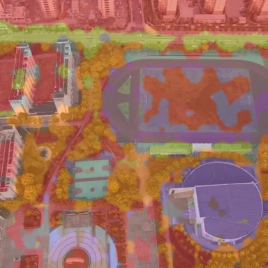
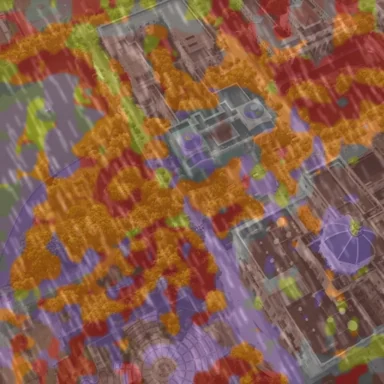
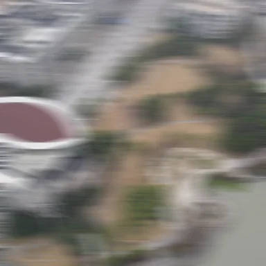
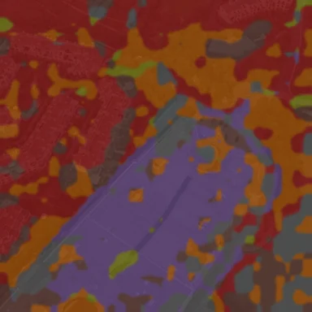
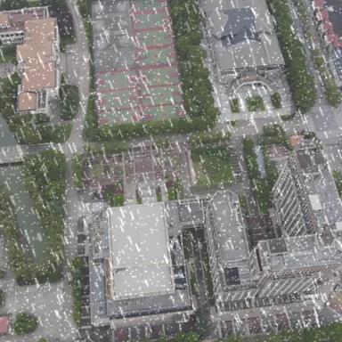
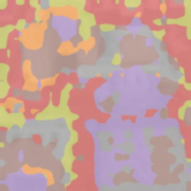
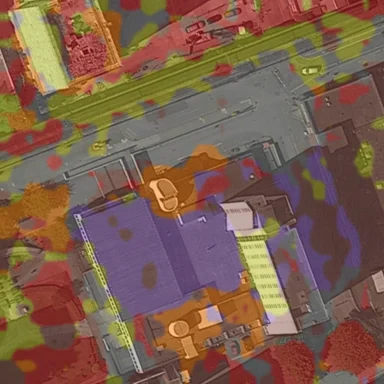
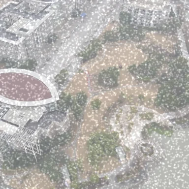
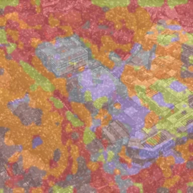
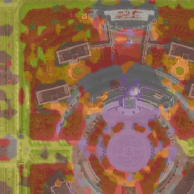
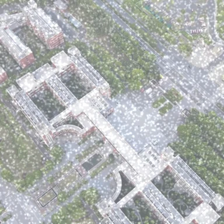
Low-altitude economy has been experiencing rapid growth in recent years, with significant contributions to the global economy. While common drone tasks such as delivery, inspection, and search-and-rescue typically use Global Navigation Satellite Systems (GNSS) to navigate, there is an increasing need for developing alternative solutions as GNSS signals can be easily jammed, spoofed, or unavailable over a prolonged operational time. As such, cross-view geo-localization (CVGL), which matches an oblique drone view to a geo-referenced satellite tile, has emerged as a potent alternative that lets an autonomous drone localize itself when GNSS fails. Despite strong recent progress, three limitations persist in current CVGL methods: 1) global-descriptor designs compress the patch grid into a single vector without separating what is shared across the view gap (layout) from what is not (texture); 2) altitude-related scale variation is implicitly retained in the learned embedding rather than treated as a nuisance to be marginalized out; and 3) multi-objective training relies on hand-tuned scalars over losses that live on incompatible gradient scales. To address these limitations, we propose SkyPart, a lightweight swappable head for patch-based vision transformers (ViTs) that institutes explicit part grouping over the patch grid. SkyPart has four components grounded in established theory: (i) learnable prototypes that compete for patch tokens via a single-pass cosine assignment; (ii) altitude-conditioned linear modulation applied only during training so that the retrieval embedding is altitude-free at inference; (iii) a graph-attention readout over active prototypes, and (iv) a Kendall uncertainty-weighted multi-objective loss that learns the loss-group weights end-to-end rather than tuning them by hand. At 26.95M parameters and 22.14 GFLOPs, SkyPart is the smallest among the top-performing methods in our comparison and sets a new state of the art on SUES-200, University-1652, and DenseUAV datasets under a single-pass, no-re-ranking, no test-time augmentation (TTA) protocol. Furthermore, its accuracy gap to the strongest baseline widens under the ten-condition WeatherPrompt corruption benchmark.
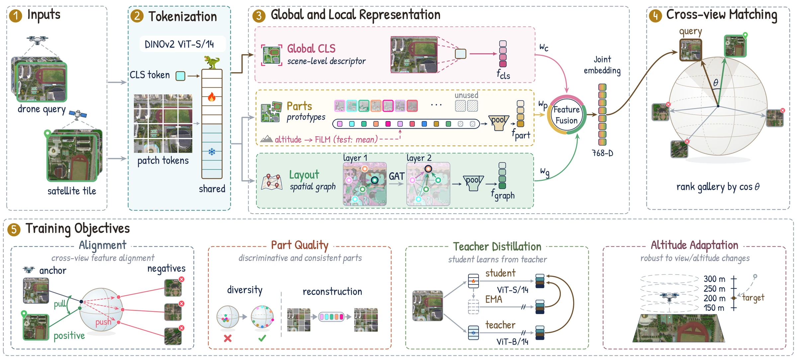
One DINOv2 ViT-S/14 encodes both views; the global CLS token, the part prototypes and the layout graph are fused into one 768-D embedding for cosine retrieval. Training objectives (bottom row) are dropped at test time.
WeatherPrompt protocol: the drone query is corrupted, the satellite gallery stays clean. Bars give SUES-200 drone→satellite R@1 (%) for SkyPart and WeatherPrompt (NeurIPS 2025), the strongest baseline.
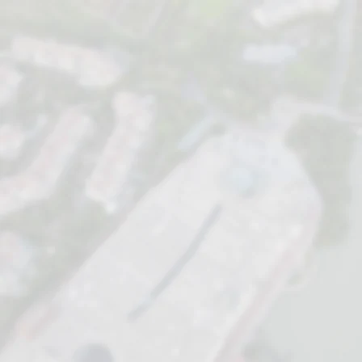
Recall at rank one over ten conditions on three benchmarks. SkyPart is the red outline.
One colour per prototype. The same parts appear in the drone view, the satellite view and under weather.
@inproceedings{skypart2026,
title = {Weather-Robust Cross-View Geo-Localization
via Prototype-Based Semantic Part Discovery},
author = {Chi-Nguyen Tran and Duy-Minh Dao-Sy and Trung-Kiet Huynh
and Phu-Hoa Pham and Phu-Quy Nguyen-Lam and Long Tran-Thanh},
booktitle = {Advances in Neural Information Processing Systems (NeurIPS)},
year = {2026}
}